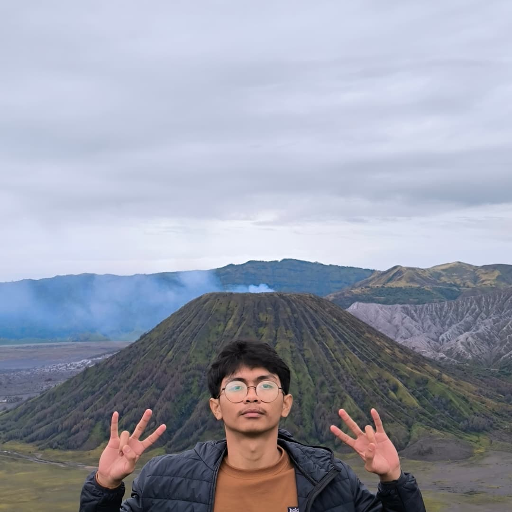
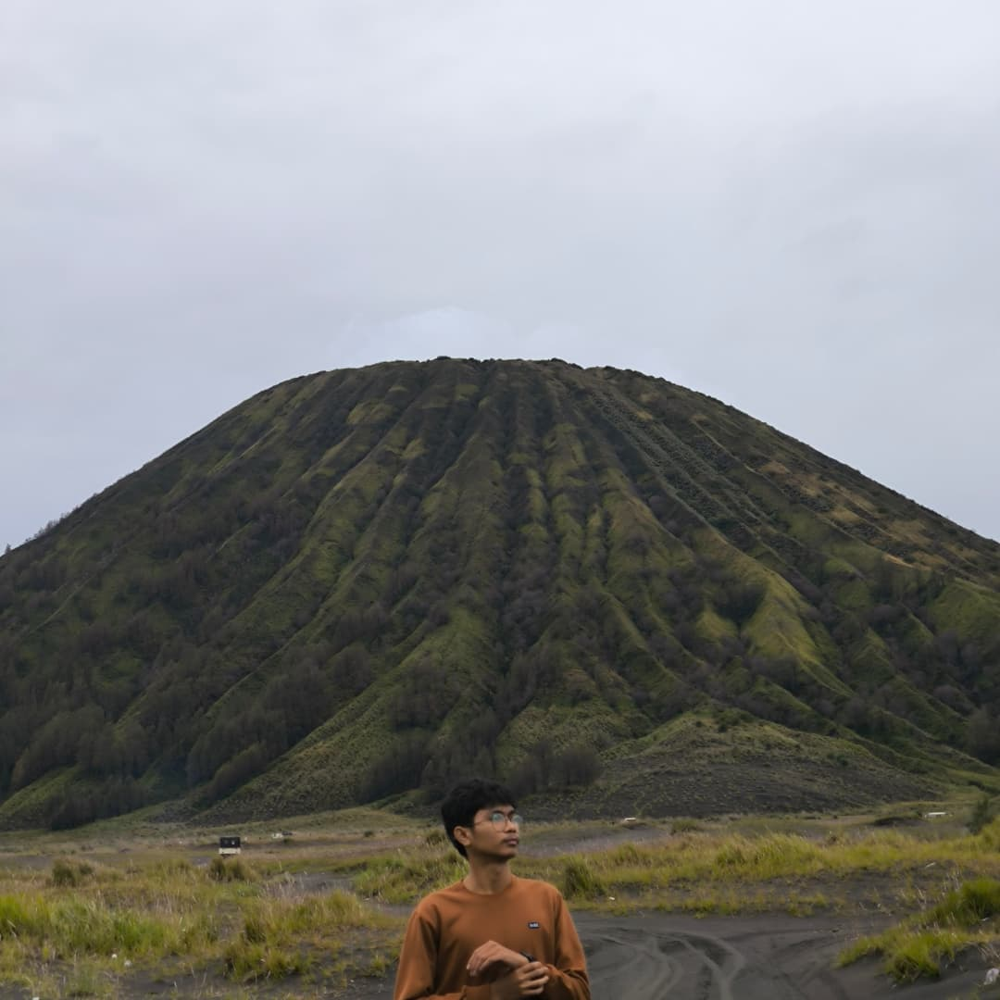

AGI'S TRAVEL

Nama:Agi Aginta Sembiring | Nim:251402059
MAIN MENU :
| SIDEBAR
 |
CONTENT
SELAMAT DATANG ! Setelah sekian lama tenggelam dalam tumpukan tugas, materi pelajaran, dan jadwal yang padat, rasanya wajar kalau tubuh dan pikiran mulai lelah. Liburan bukan berarti kita berhenti belajar sepenuhnya, tapi justru memberi ruang untuk bernapas, menyegarkan pikiran, dan mengisi ulang semangat yang sempat terkuras. Karena kalau terus dipaksa tanpa jeda, belajar bisa kehilangan maknanya jadi rutinitas yang bikin jenuh, bukan proses yang menyenangkan. Dengan mengambil waktu untuk liburan, kita bisa menikmati momen tanpa tekanan, menemukan inspirasi dari hal-hal sederhana, dan kembali dengan energi yang baru. Pikiran yang segar membuat kita lebih siap menghadapi tantangan berikutnya. Jadi, jangan merasa bersalah untuk rehat sejenak. Kadang, berhenti sebentar adalah cara terbaik untuk melangkah lebih jauh. |
|---|---|
| Tugas dasar pemrograman
By AGI AGINTA SEMBIRING |
|